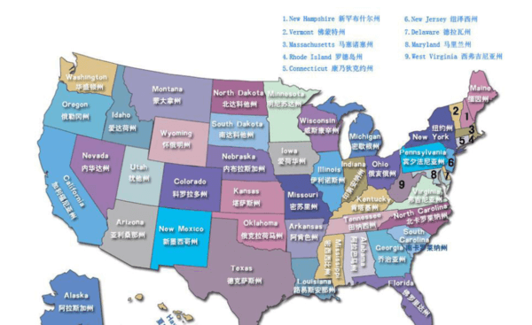

美利坚合众国（英语：United States of America），简称“美国”（United States），是由华盛顿哥伦比亚特区、50个州和关岛等众多海外领土组成的联邦共和立宪制国家。
注册美国公司，我们可以为您提供近50个州的注册服务，其中包括：加利福尼亚州（加州）、纽约州（纽约）、犹他州、特拉华州、佛罗里达州（佛州）、科罗拉多州、内华达州、华盛顿州、德克萨斯州（德州）、新泽西州、俄勒冈州
密西西比州、亚利桑那州、佐治亚州、夏威夷州、伊利诺伊州 、马萨诸塞州、 密歇根州、俄亥俄州、 北卡罗来纳州、 路易斯安那州、 怀俄明州、 新罕布什尔州、 肯塔基州、印第安纳州、
康涅狄格州、马里兰州、弗吉尼亚州、明尼苏达州、阿肯色州、宾夕法尼亚州等等。如果您没有比较中意的州，我们会根据您的行业，为您推荐费用和税收优惠的区域注册
注册内华达州公司的优势
Advantage of Nevada
1.内华达州是美国中部与西部的重要桥梁和货物储存中心;
2.内华达州免收特许税、资产受到保护;
3.免收公司和个人所得税;
4.在内华达州注册的公司如在其他州经营，无需缴纳内华达州公司所得税;
5.公司股东不必是内华达州居民或美国居民;
6.股东有最大的保密性和匿名。股东名单不列出在公开的纪录里;
7.职员和董事是被保护的,不为公司的法律的行动负个人责任;
8.公司不用缴纳股份税，非内华达州居民持有的股份也无需纳税;
9.内华达州是美国唯一没有与国税局签署"信息共享协议"的辖区，可避免美国联邦政府得到内华达州公司的纳税资料;
10.如果公司在美国没有营业，就不必缴纳联邦收入税，只需每年缴纳小额年费，年费是属于全美国最低的;
注册加州公司的优势
Advantage of California
1.美国加州公司名称选择自由;
2.美国加州公司营商基础设施良好;
3.美国加州公司没有外汇管制，资金进出自由;
4.以美国公司发邀请函，有助方便中方人士办理护照和签证;
5.在美国加州注册公司有助于您获得各类商务和市场信息;
注册特拉华州公司的优势
Advantage of Delaware
1.特拉华州在政治、法律和经济方面均发展成熟;
2.特拉华州公司法比较完善，有完备妥善的专业、金融和法律服务，提供专业支持;
3.特拉华州政府保障隐私不必披露实益拥有人的资料;
4.不必就公司在境外赚取的收入缴税;
5.非当地股东不必就股权向特拉华州缴税;
6.特拉华州周年特许经营税低;
7.公司架构简单,一人可以同时担任董事、股东和高级职员等职务;
8.方便公司用者,适时迅速的注册服务、特快服务、网上存档文件和查册等;
9.简便行政管理,公司账册纪录不必存放于特拉华;
10.如果公司在美国没有营业，就不必缴纳联邦收入税，只需每年缴纳小额年费，年费是属于全美国最低的;
科罗拉多州虽然不如加州纽约州那样负有盛名，但也有其独特的优势。在这里注册公司，不光注册费用低廉，受理时间短，后期维护也花费较少，十分便捷。另外，该州对公司名称的要求比较宽松，如果其他州限制注册你公司的名字，不妨尝试一下在科罗拉多州注册。